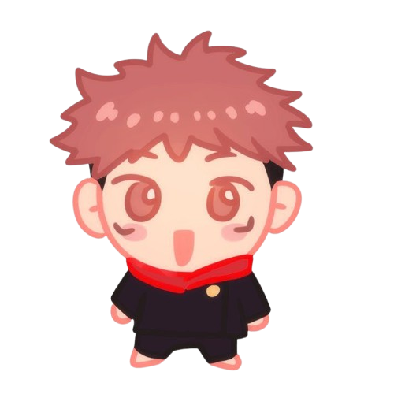

All About Us
WebDesigner
Desta
Pengenalan
Aku adalah desta, aku berumur 16 Tahun, akui biasa dipanggil desta. aku tinggal di balikpapan kota di Lapangan Merdeka.
Alasan Masuk RPL
Alasan saya memilih masuk jurusan RPL karena saya dari dulu suka yang berkaitan teknologi dan saya juga memiliki passion untuk menciptakan dan menjadi salah satu programmer-progammer yang hebat.
Jerico
Pengenalan
Namaku adalah Jerico Satria Dwitama, aku biasa di panggil jerico, aku berumur 16 Tahun, aku tinggal di Balikpapan tepatnya daerah bjbj.
Alasan Masuk RPL
Alasan saya memilih untuk masuk ke jurusan RPL adalah karena saya memiliki passion untuk menciptakan pengalaman digital yang menarik dan fungsional. Saya percaya bahwa website
yang baik bukan hanya tentang tampilan, tetapi juga tentang bagaimana user berinteraksi dengannya.
Design + Growth
Kami membuat website yang tidak hanya terlihat bagus, tetapi juga mudah digunakan dan cepat. Setiap proyek didesain untuk membantu ide kamu tampil lebih profesional.
Projects
7+
Experience
2.5 yrs
Clients
5+
